If you’re building a business or brand on Instagram, your analytics should play a vital role in your overall marketing strategy.
Instagram’s analytics offer valuable data on your current content performance; helping you craft better ways of growing your account and connecting with the right audiences.
It’s an aspect of the platform that can’t be ignored – especially for those developing an audience. The following guide breaks down the fundamentals of Instagram analytics, why they’re important, and the best tools for tracking such information.
What are Instagram Analytics?
Instagram analytics are a native feature on the platform. These stats offer users insight on their current content strategy, and how well it’s performing with their target audience.
Through your analytics, you’ll get a clear image of the type of content that works best, the effectiveness of your marketing campaigns, and demographics you resonate with most.
This data isn’t just available for standard posts, however; users can also measure the performance of their Story and ad content.
Your analytics track information such as follower growth; content reach, engagement, and impressions; and the number of clickthroughs on your website URL.
Why Do Instagram Analytics Matter?
By keeping track of your analytics, you can then take the appropriate steps to improve your content quality and marketing efforts.
This data helps you understand what your audience likes and dislikes. Do your followers respond better to video content? What recent posts have lead to surges in engagement? Did a change in theme, subject matter, or brand image land well with your current audience, or did it fall short of previous content?

Courtesy of Iconosquare.
It can also offer insight into the type of value your profile drives. Does your bio URL generate enough website traffic? Perhaps you gain high engagement on your posts – but not enough clickthroughs to your online store. According to this data, you may need more engaging call-to-actions.
Understanding these analytical trends and patterns can help you refine your content strategy. In a sea of over 25 million business profiles, this constant improvement is necessary to keep ahead of the curve.
So how does one track their Instagram Analytics?
A Guide to Instagram Insights
Your Instagram Insights provide plenty of built-in tools to help you measure your profile analytics, along with your audience and post metrics.
This native feature is exclusive to business profiles (if you’re looking to grow your brand on the platform, having an Instagram business account is crucial!), and is found in your profile menu at the top right-hand corner of your screen.
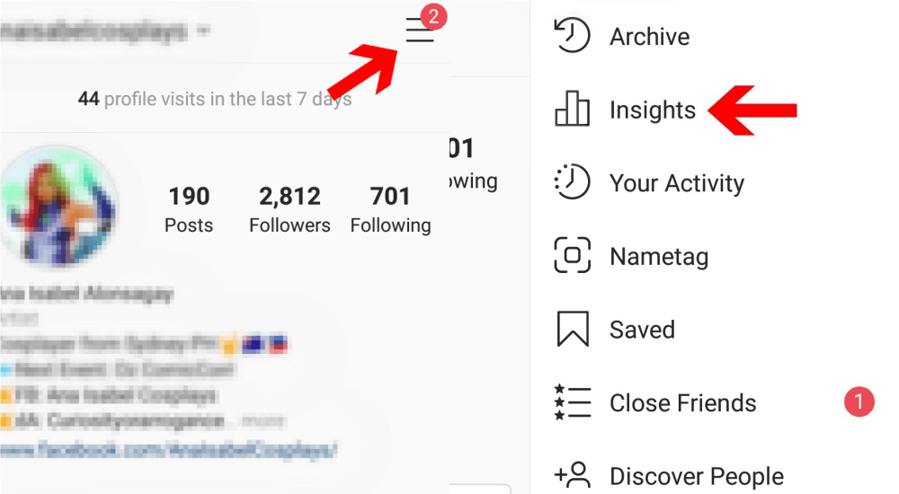
Here, you’ll find your insights divided into three sections: Content, Activity, and Audience.
Your “Content” tab tracks all of the recent posts and stories you’ve uploaded during the week, with detailed insights (such as reach, impressions, and likes) provided for each.
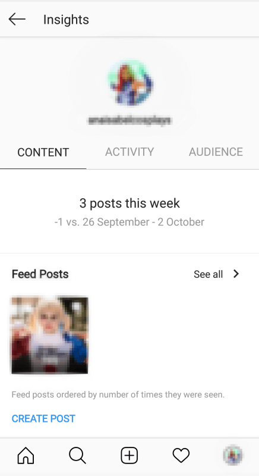
Under “Activity”, you’ll find weekly data on the any interactions taken on your content or profile. These stats will offer an analytical report on the days that garnered the most activity, along with the total number of accounts that have discovered your account in the previous week.
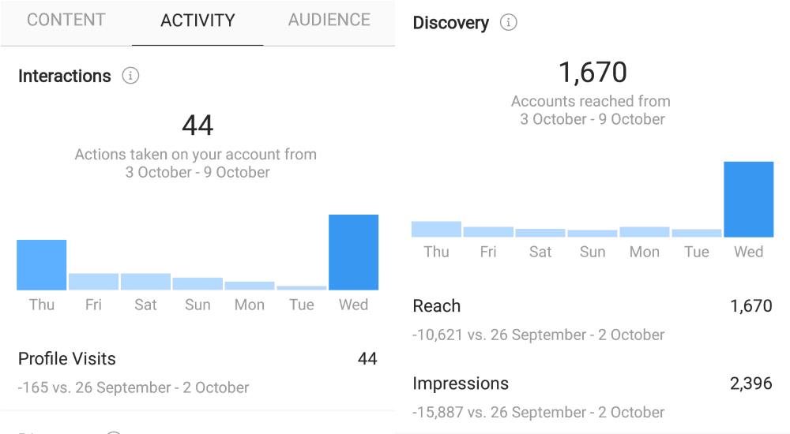
Finally, your “Audience” tab displays your total number of followers and overall weekly growth. With recent updates to Instagram Insights, this section now shows graphed data on the number of follows and unfollows you’ve gained during the week.
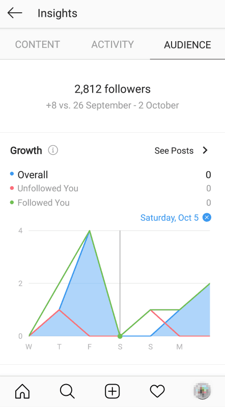
These insights also offer information on your most engaged demographics, including stats regarding gender, location, and age range.

One of the most valuable metrics provided is your followers’ most active times – displayed by the hour or day (depending on your preference). Using this data, you can ensure future posts are uploaded during optimum times of engagement.

The Top Instagram Metrics to Track
To improve your content strategy, you’ll need a grasp of what works and what doesn’t. This is why analytics play such a vital role in your Instagram efforts – but which metrics are the most important ones to follow?
Below, we’ve broken down the top three Instagram metrics any profile should be tracking. These help best in measuring content performance and planning strategies for further success.
Follower Growth
Chances are, when you think of building your profile – the agitating follower count comes to mind. This simple number plays a large factor in your overall content engagement and brand reputation.
The more followers you have, the more likes, comments, and views your content will get. With a high follower count, new viewers are also more likely to trust your profile, and view it as one of quality – possibly joining the club themselves.
Courtesy of johnmayer (Instagram account).
It’s therefore important to not only keep track of the followers you currently have, but your follower growth over time. This will let you know if you’re on the right track, or if something needs to change in your current content strategy.

For example, if the previous months have shown a steady increase in followers, then you’re likely doing something right. However, if your growth tends to fluctuate at an odd pattern – it may be worth examining the content or marketing-related reasons behind this.
From this data, you can then make further decisions to improve or change your marketing strategy altogether.
Reach, Impressions, and Engagement
When analyzing the success of your content, it helps to track these three fundamental metrics:
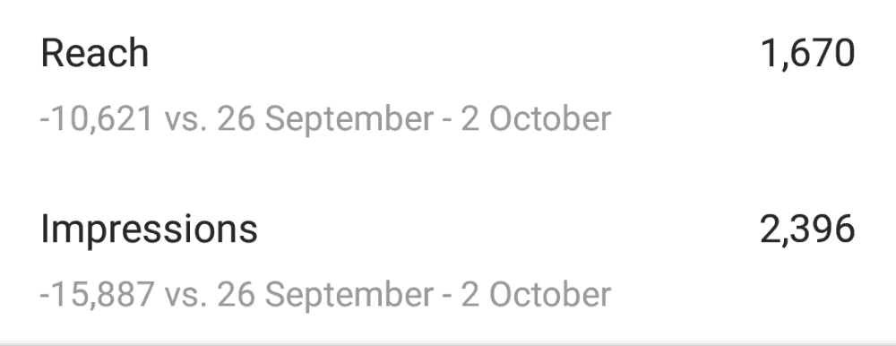
- Reach: Your reach rate is measured by the number of unique users who viewed your posts, Stories, ads, and videos. This helps determine your content exposure, and whether you’ve been reaching new audiences on the platform.
- Impressions: These measure the total number of times your content was seen by viewers, and include multiple views by a single user.
- Engagement: Arguably the most important metric of the three, engagement covers the number of unique profiles that have commented, liked, saved, or shared your content. Your engagement rate, however, does not count multiple comments by a single user.
On Standard Posts
To view these metrics on a typical Instagram post, simply tap on the post you wish to analyze, and select the “View Insights” option underneath.
This will pop up all the likes, comments, shares, and saves your post has garnered over time. Here, you’ll find data on your reach and total impressions; including a breakdown of the sources from where your content was seen, such as the home feed, your hashtags, and your profile.
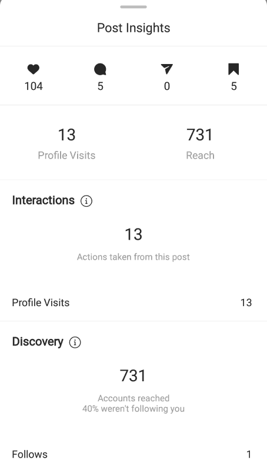
These insights also count the number of profile visits driven from your posts.
To display multiple insights for multiple posts, enter your Instagram Insights and select “See All” in the “Content” section.
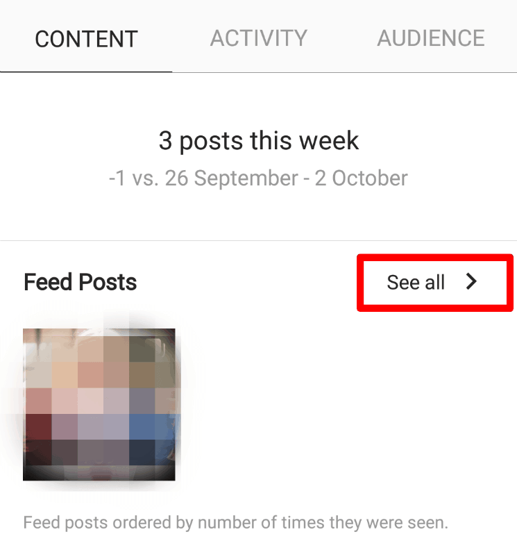
This will pull up a feed of your posts, each displaying their reach numbers by default.
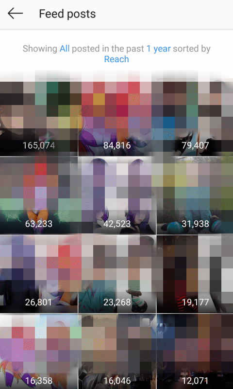
You can filter these posts by type, metric, and time period according to your preference.
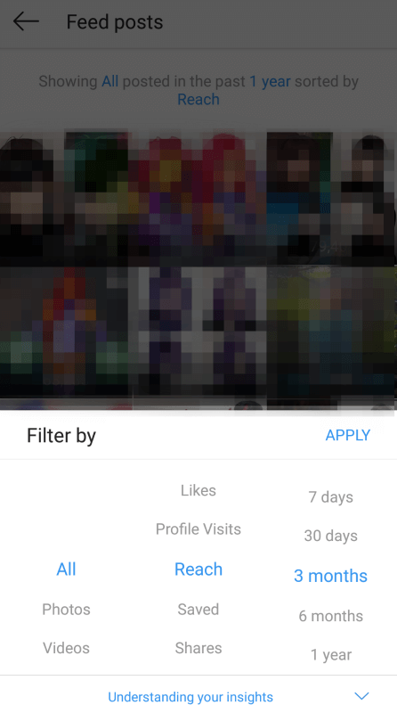
Stories
Similarly, your Instagram Insights can also provide the reach, impressions, and engagement rates of your Stories. These are accessed in the “Stories” section under “Posts” in your Insights page.
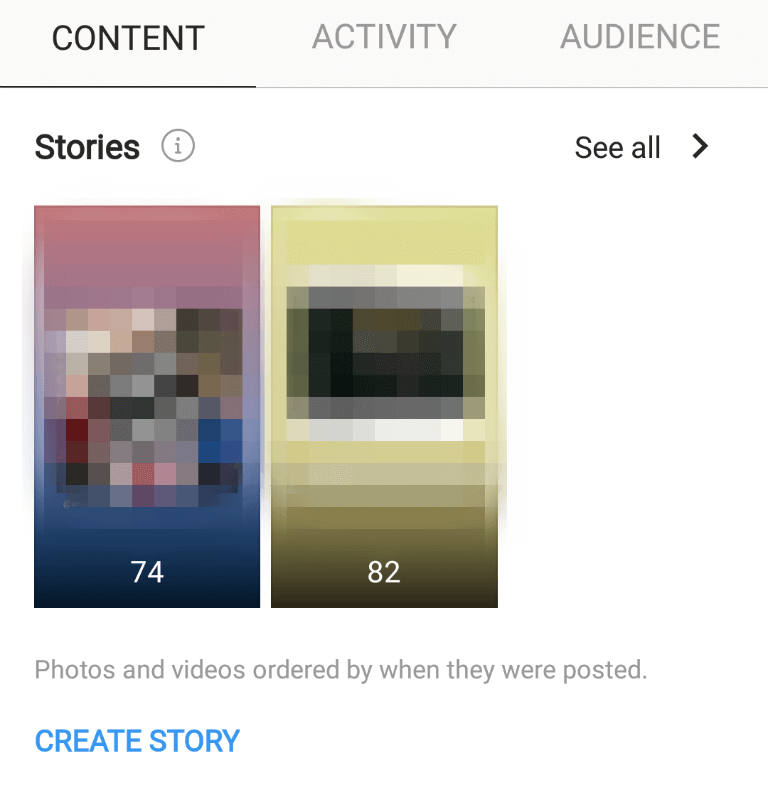
By default, this page shows a feed of Story insights from the last 14 days. As with standard posts, however, you can filter through these by metric or time period (though 14 days back is the farthest these insights will cover).
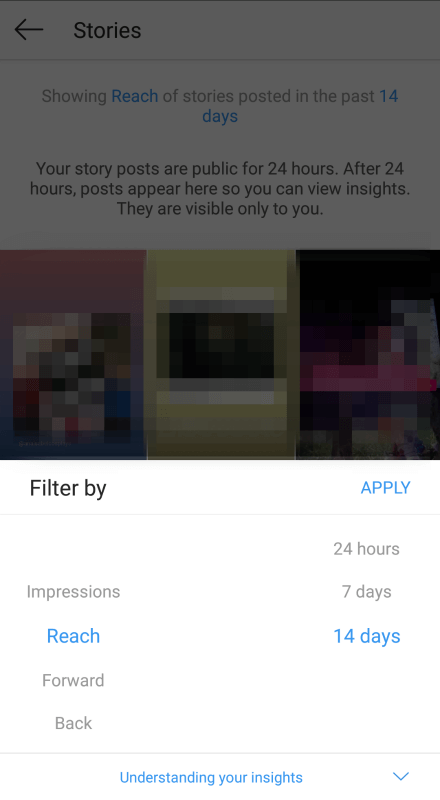
Unlike a typical Instagram post, Story engagements can also be measured by the number of viewers that who viewed your next story, who tapped back to view a previous story, who swiped over to view the next user’s story, or who exited from the feature altogether.
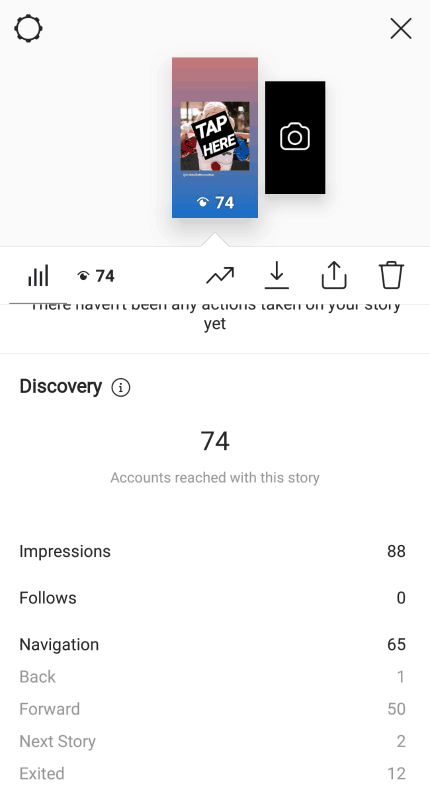
These can help you determine how engaging your Story content is, and material that may have lost audience attention.
Website Traffic
Since the advent of Shopping on Instagram, consumer experience on the platform has never been more convenient. Now, store profiles can add product stickers right onto their Stories or posts. When tapped, these tags direct the viewer to the appropriate landing page on the brand’s official website.
Courtesy of welovecolorscosplay (Instagram account).
If your goal on Instagram is converting customers and boosting sales, you’d want to ensure your content does just that. Viewing insights for your shoppable content is as easy as tapping the “View Insights” option on standard posts, and swiping up on a Story to view its engagement data.
This can help you determine which posts (and thus, which products) generate the most clickthroughs to your website. In the same vein, it can also identify the products that aren’t resonating as well with audiences.
Your Instagram Insights also offers basic data on the website traffic driven from your bio URL. Under the “Interactions” section, you’ll find a metric labelled “Website Clicks”, along with the corresponding number of website visits drawn from the link in your bio.

Courtesy of Later.
Since this information is fairly simple, those looking for a more detailed analysis may benefit from a third-party analytics tool.
Google Analytics is a popular choice for many, though the tools discussed below are tailored specifically for those on Instagram.
The Best Analytics Tools for Instagram
When analyzing your content strategy, the Instagram Insights tab is an easy place to start.
However, if you want a little extra data, it pays to invest in a third-party analytics tool.
We’ve listed our top four picks below, each offering plenty of customization and deep-dive tracking features.
Best Analytics Tool For Instagram #1 – SproutSocial
Looking to dig into the nitty-gritty of your Instagram performance? SproutSocial’s analytics suite provides Instagrammers with all they need to track growth metrics at a post and profile level.
Users can generate detailed assessments of their content over a set time period; including their top-performing posts, interactions (likes, comments, saves) received, and any high-profile influencers who’ve engaged with their profile.
Courtesy of SproutSocial.
The service also offers hashtag tracking tools, helping you identify your most used tags and those that garner the most engagement. This feature also helps you measure the effectiveness of any branded hashtags, relative to broader industry tags.
Courtesy of SproutSocial.
Finally, SproutSocial offers the unique option of monitoring competitor data. Their tools allow you to set content goals based on competitor performance and the standards set by your industry. You can also choose to track the audience growth of fellow brands and influencers, along with their campaigns and most-used hashtags.
Courtesy of SproutSocial.
Best Analytics Tool For Instagram #2 – Iconosquare
Iconosquare not only prides itself as an in-depth, user-friendly analytics tool; it’s also an all-around platform for content management and post scheduling.
Its analytical features include hashtag and competitor tracking, offering insight into the trending topics and content strategies that resonate with your target audience. Their competitor metrics are especially detailed, letting you monitor other profiles’ content activity over the last 30 days. This data includes posting times, hashtag use, engagement per post, and their growth in followers over time.

Courtesy of Iconosquare.
Iconosquare also the grants the option of tracking your Story performance. This feature offers a comprehensive look on the impact of your Story content, and includes stats unavailable on Instagram’s native tools. Such information includes data on your Stories’ completion rate (the number of users who watch your stories until the end), and a report outlining your best times to post for highest Story engagement.

Courtesy of Iconosquare.
As mentioned, Iconosquare also allows users to schedule future posts for auto-publishing; along with a “Conversations” tool that helps you keep track of and respond to all unread comments.
Best Analytics Tool For Instagram #3 – UnionMetrics
Finally, UnionMetrics is another professional, easy-to-use platform that offers the complete toolkit for measuring and improving one’s Instagram performance.
Along with aforementioned tools such as competitor, hashtag, and post engagement tracking from previous services, UnionMetrics also offers advanced “social listening”. This feature allows you to monitor any platform conversations surrounding your brand, helping you prepare for potential company blunders or social media crises.

Courtesy of Union Metrics.
By monitoring your target audience’s activity, you can also compare your account performance with that of high-profile competitors. Getting a clear overview industry interests and discourse can also help you pinpoint social trends for upcoming campaigns.
Courtesy of UnionMetrics.
On top of this, UnionMetrics also dives into fundamental Instagram insights; such story and post reach, profile engagements, optimum posting times and most engaged demographics. Users also have the option of collating this data into interactive digital reports, with unique visual graphs and at-a-glance comparisons.
Use Instagram Analytics to Skyrocket Your Growth!
Keeping track of your Instagram analytics is crucial to growing your brand on the platform. While Instagram’s native tools offer plenty of free, user-friendly data, these third-party tools can offer in-depth information to further sharpen your marketing strategy. Growing your profile needn’t be a stab in the dark; use Instagram analytics to build your audience and engagement with research-backed confidence.